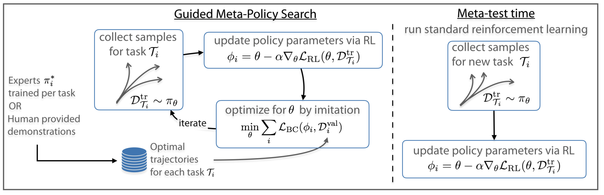
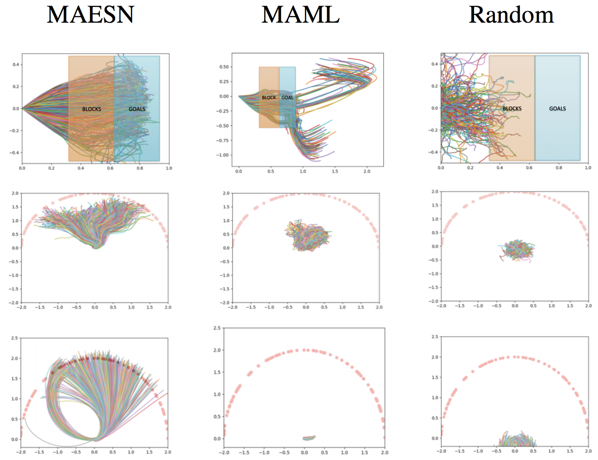
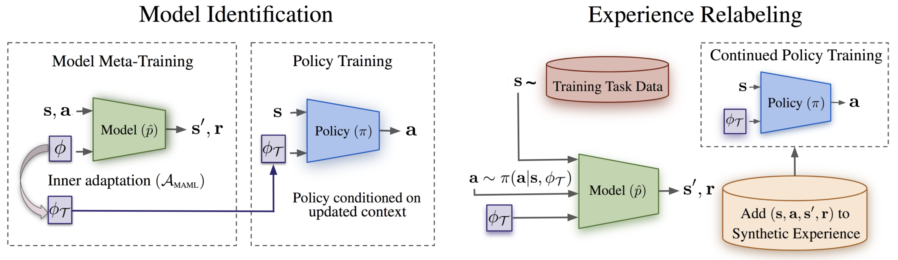
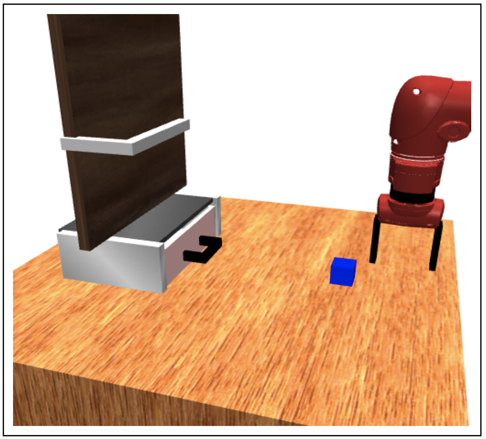

|
Russell Mendonca
I am an incoming PhD student in the Robotics Institute at Carnegie Mellon University,
interested in working on robot learning.
Previously, I graduated from UC Berkeley in Electrical Engineering and Computer Science,
and did research in reinforcement learning with Prof. Sergey Levine in the
Berkeley Artificial Intelligence Lab (BAIR)
Email /
CV /
Google Scholar
|
|
|
News
Selected as a finalist for the CRA Outstanding Undergraduate Researcher Award.
Gave a talk on our work Guided Meta-Policy Search at NeurIPS 2019.
(Play link from 38:48)
|
|
Research
I worked with Prof. Sergey Levine on multi-task reinforcement learning for continuous control. My main
focus has been dealing with challenges in meta-learning, or "learning to learn" from multi-task data.
|
|
 |
Guided Meta-Policy Search
Russell Mendonca,
Abhishek Gupta,
Rosen Kralev,
Pieter Abbeel,
Sergey Levine,
Chelsea Finn
Conference on Neural Information Processing Systems (NeurIPS) , 2019
(Spotlight Talk - top 15% of accepted papers)
slides /
website /
code
We develop an algorithm which can meta-learn in a data efficient manner and also train on raw visual
input, by reformulating the meta-learning objective to have imitation learning as a subroutine. We
show about an order of magnitude sample efficiency gain on challenging simulation environments, and
much more stable learning from high dimensional image observations as compared to prior state of the art methods.
|
|
 |
Meta-Reinforcement Learning of Structured Exploration Strategies
Abhishek Gupta,
Russell Mendonca,
YuXuan Liu,
Pieter Abbeel,
Sergey Levine
Conference on Neural Information Processing Systems (NeurIPS) , 2018
(Spotlight Talk - top 20% of accepted papers)
slides /
code
We design a meta-learning algorithm that acquires coherent exploration strategies, in addition to adapting
quickly to new tasks. This enables learning on new tasks with sparse feedback. Given a set of tasks,
we meta-learn a representation space and then explore in the learnt task space instead of the space of
random actions, resulting in more meaningful exploratory behavior.
|
|
 |
Meta-Reinforcement Learning Robust to Distributional Shift via Model Identification and Experience Relabeling
Russell Mendonca *,
Xinyang Geng *,
Chelsea Finn,
Sergey Levine
In Submission to the Conference on Neural Information Processing Systems (NeurIPS) , 2020
We develop a meta-learning algorithm that can generalize efficiently to unfamiliar tasks. Recognizing
that supervised learning is much more effective than RL for extrapolation to out-of-distribution tasks,
we meta-learn models of state dynamics, for which a natural supervised objective exists. Given a new
task, we use synthetic data generated from the learned model for continued training, ensuring that
extrapolation is highly data-efficient.
|
|
 |
Decoupled Meta-Learning with Structured Latents
Russell Mendonca,
Sergey Levine,
Chelsea Finn
Accepted to NeuRIPS workshop on Meta-Learning , 2019
We develop an algorithm that can meta-learn across non-homogenous tasks consisting of multiple
families (such as opening doors, pushing objects), since most current methods can only train effectively
within a task family (such as opening a door to different angles). We use imitation learning as a
subroutine, and use a mixture model to capture the diverse exploration strategies required to discover
rewards for tasks from different families.
|
|
{kind=link}